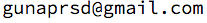

I am a research fellow in the Programming Languages and Tools group at Microsoft Research India. I work with Dr. Ganesan Ramalingam on operator scheduling in a distributed stream processing engine as part of an ongoing project named CScale.
I graduated from the Indian Institute of Technology Bombay in 2015, majoring in Computer Science and Engineering. I worked with Prof. S. Sudarshan for my undergraduate research project on index structures for key value stores.

Research Interests
I am broadly interested in databases and distributed systems. In particular, I am interested in building systems for storing, processing and analysing big data. I like to explore optimization techniques for new and emerging processor and storage architectures; and building adaptive systems. I am currently working on a distributed stream processing engine - click here to know more about this project.
News
I am applying for PhD this fall.I am planning to submit work on "improving read performance of write-optimized key value stores" in the upcoming VLDB 2016.
Contact Information
Microsoft Research India,
Vigyan, #9, Lavelle Road,
Bangalore, India, 560001

